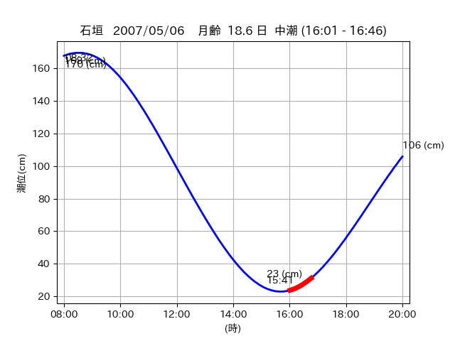

<!DOCTYPE html>
<html>
<head>
    
    <meta http-equiv="content-type" content="text/html; charset=UTF-8" />
    
        <script>
            L_NO_TOUCH = false;
            L_DISABLE_3D = false;
        </script>
    
    <style>html, body {width: 100%;height: 100%;margin: 0;padding: 0;}</style>
    <style>#map {position:absolute;top:0;bottom:0;right:0;left:0;}</style>
    <script src="https://cdn.jsdelivr.net/npm/leaflet@1.9.3/dist/leaflet.js"></script>
    <script src="https://code.jquery.com/jquery-3.7.1.min.js"></script>
    <script src="https://cdn.jsdelivr.net/npm/bootstrap@5.2.2/dist/js/bootstrap.bundle.min.js"></script>
    <script src="https://cdnjs.cloudflare.com/ajax/libs/Leaflet.awesome-markers/2.0.2/leaflet.awesome-markers.js"></script>
    <link rel="stylesheet" href="https://cdn.jsdelivr.net/npm/leaflet@1.9.3/dist/leaflet.css"/>
    <link rel="stylesheet" href="https://cdn.jsdelivr.net/npm/bootstrap@5.2.2/dist/css/bootstrap.min.css"/>
    <link rel="stylesheet" href="https://netdna.bootstrapcdn.com/bootstrap/3.0.0/css/bootstrap-glyphicons.css"/>
    <link rel="stylesheet" href="https://cdn.jsdelivr.net/npm/@fortawesome/fontawesome-free@6.2.0/css/all.min.css"/>
    <link rel="stylesheet" href="https://cdnjs.cloudflare.com/ajax/libs/Leaflet.awesome-markers/2.0.2/leaflet.awesome-markers.css"/>
    <link rel="stylesheet" href="https://cdn.jsdelivr.net/gh/python-visualization/folium/folium/templates/leaflet.awesome.rotate.min.css"/>
    
            <meta name="viewport" content="width=device-width,
                initial-scale=1.0, maximum-scale=1.0, user-scalable=no" />
            <style>
                #map_9a86689fa1c1d2a71eb7bfcbfc97ddd3 {
                    position: relative;
                    width: 2048.0px;
                    height: 1600.0px;
                    left: 0.0%;
                    top: 0.0%;
                }
                .leaflet-container { font-size: 1rem; }
            </style>
        
</head>
<body>
    
    
            <div class="folium-map" id="map_9a86689fa1c1d2a71eb7bfcbfc97ddd3" ></div>
        
</body>
<script>
    
    
            var map_9a86689fa1c1d2a71eb7bfcbfc97ddd3 = L.map(
                "map_9a86689fa1c1d2a71eb7bfcbfc97ddd3",
                {
                    center: [24.267, 124.156],
                    crs: L.CRS.EPSG3857,
                    ...{
  "zoom": 12,
  "zoomControl": true,
  "preferCanvas": false,
}

                }
            );

            

        
    
            var tile_layer_9c55579e36e760605419aa22e78383d9 = L.tileLayer(
                "https://cyberjapandata.gsi.go.jp/xyz/seamlessphoto/{z}/{x}/{y}.jpg",
                {
  "minZoom": 0,
  "maxZoom": 18,
  "maxNativeZoom": 18,
  "noWrap": false,
  "attribution": "\u5730\u7406\u9662\u5730\u56f3",
  "subdomains": "abc",
  "detectRetina": false,
  "tms": false,
  "opacity": 1,
}

            );
        
    
            tile_layer_9c55579e36e760605419aa22e78383d9.addTo(map_9a86689fa1c1d2a71eb7bfcbfc97ddd3);
        
    
            var marker_960e71b5e4b9d11330bc92b898d0f7d5 = L.marker(
                [24.2508, 124.1274],
                {
}
            ).addTo(map_9a86689fa1c1d2a71eb7bfcbfc97ddd3);
        
    
            var icon_def2f5f285b835362e590878e5716d05 = L.AwesomeMarkers.icon(
                {
  "markerColor": "orange",
  "iconColor": "white",
  "icon": "info-sign",
  "prefix": "glyphicon",
  "extraClasses": "fa-rotate-0",
}
            );
        
    
        var popup_35fe89caf7a571721a8aa2a5f7b7b026 = L.popup({
  "maxWidth": "100%",
});

        
            
                var html_5b9cdb01d9ded7a42d643c397ef377b6 = $(`<div id="html_5b9cdb01d9ded7a42d643c397ef377b6" style="width: 100.0%; height: 100.0%;"><table><tr><td></td></tr><tr><td><center>20070506 No.1 </center></table></td></tr></table</div>`)[0];
                popup_35fe89caf7a571721a8aa2a5f7b7b026.setContent(html_5b9cdb01d9ded7a42d643c397ef377b6);
            
        

        marker_960e71b5e4b9d11330bc92b898d0f7d5.bindPopup(popup_35fe89caf7a571721a8aa2a5f7b7b026)
        ;

        
    
    
                marker_960e71b5e4b9d11330bc92b898d0f7d5.setIcon(icon_def2f5f285b835362e590878e5716d05);
            
    
            var poly_line_0b89e186749adf93dd3d565dd7e2753a = L.polyline(
                [[24.2508, 124.1274], [24.2522, 124.1329]],
                {"bubblingMouseEvents": true, "color": "#FF00FF", "dashArray": null, "dashOffset": null, "fill": false, "fillColor": "#FF00FF", "fillOpacity": 0.2, "fillRule": "evenodd", "lineCap": "round", "lineJoin": "round", "noClip": false, "opacity": 1.0, "smoothFactor": 1.0, "stroke": true, "weight": 3}
            ).addTo(map_9a86689fa1c1d2a71eb7bfcbfc97ddd3);
        
    
            var marker_8e8f74a4b0614bb65d7078b0eada2b6e = L.marker(
                [24.2673, 124.1561],
                {
}
            ).addTo(map_9a86689fa1c1d2a71eb7bfcbfc97ddd3);
        
    
            var icon_362a265c3589201ebccd23368599b4c7 = L.AwesomeMarkers.icon(
                {
  "markerColor": "orange",
  "iconColor": "white",
  "icon": "info-sign",
  "prefix": "glyphicon",
  "extraClasses": "fa-rotate-0",
}
            );
        
    
        var popup_600ab279ada27384b8958f9cee6ba5c4 = L.popup({
  "maxWidth": "100%",
});

        
            
                var html_d1c4c8dffc9163d3a7ea64d4b865cb60 = $(`<div id="html_d1c4c8dffc9163d3a7ea64d4b865cb60" style="width: 100.0%; height: 100.0%;"><table><tr><td></td></tr><tr><td><center>20070506 No.2 </center></table></td></tr></table</div>`)[0];
                popup_600ab279ada27384b8958f9cee6ba5c4.setContent(html_d1c4c8dffc9163d3a7ea64d4b865cb60);
            
        

        marker_8e8f74a4b0614bb65d7078b0eada2b6e.bindPopup(popup_600ab279ada27384b8958f9cee6ba5c4)
        ;

        
    
    
                marker_8e8f74a4b0614bb65d7078b0eada2b6e.setIcon(icon_362a265c3589201ebccd23368599b4c7);
            
    
            var poly_line_116a39af8e39fe28816ffee44e60484c = L.polyline(
                [[24.2673, 124.1561], [24.2671, 124.1563]],
                {"bubblingMouseEvents": true, "color": "#00FFFF", "dashArray": null, "dashOffset": null, "fill": false, "fillColor": "#00FFFF", "fillOpacity": 0.2, "fillRule": "evenodd", "lineCap": "round", "lineJoin": "round", "noClip": false, "opacity": 1.0, "smoothFactor": 1.0, "stroke": true, "weight": 3}
            ).addTo(map_9a86689fa1c1d2a71eb7bfcbfc97ddd3);
        
</script>
</html>